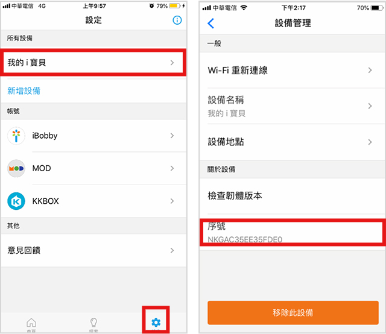

-
1什麼是i寶貝智慧聲控服務？主要功能為何？
i寶貝是中華電信研發的AI智慧語音應用平台，整合了語音辨識、通訊連網、人工智慧、大數據等介面。 主要功能有: MOD聲控、中華個人助理、中華智慧家庭、KKBOX、hichannel廣播、FunPark有聲書、大家說英語、股市行情、HiNet生活誌新聞、1288查詢店家、愛播聽書FM有聲書等等，未來不斷推出及開發更多更新的智慧應用服務。
-
2i寶貝智慧音箱是什麼？
符合指定規格的聲控喇叭搭載i寶貝智慧聲控服務，即可使用『中文聲控』給音箱下指令，是AI人工智慧音箱，亦是藍牙音箱。
-
3i寶貝智慧音箱的適用對象？
i寶貝智慧音箱提供多元服務，忙碌上班族開口就能獲得交通、新聞資訊，科技癮父母播放童書、英文陪小孩子一起成長，樂活銀髮族由智慧音箱隨時提醒代辦事項，慵懶沙發族只要動口輕鬆轉台MOD、聽音樂，積極投資族說出股票馬上掌握財金資訊，適合全年齡層用戶。
-
4如何申購i寶貝智慧音箱？有任何限制嗎?
中華電信全省門市/神腦特約服務中心(行動4G方案)均可購買，可以搭配優惠方案聰明小錢就可以享受智慧聲控，另有單機方案輕鬆把音箱帶回家！詳細方案內容請看官網的「優惠方案」。
-
5使用i寶貝智慧音箱服務網路環境及手機版本建議?
建議網路頻寬至少20M以上，具備Wifi或行動4G熱點分享功能，且頻段為2.4Ghz的Wi-Fi。手機版本iOS 10以上或 android 6.0以上。
-
6i寶貝智慧音箱綁定流程中，若家中Wi-Fi沒有設密碼如何下一步呢?
若家中Wi-Fi沒有設密碼，請於Wi-Fi密碼的欄位輸入一個空白鍵即可進行下一步綁定流程。
-
7綁約期滿後，我還可以使用聲控服務嗎?
只要持續租用i寶貝智慧聲控服務，即可持續聲控智慧音箱及收聽i寶貝上各種內容。
-
8申購i寶貝智慧音箱後，何時可以使用？
請參閱並執行以下四步驟，就可以喚醒i寶貝開始享受您的智慧生活。
(1) 將i寶貝智慧音箱插上電源。
(2) 下載i寶貝+ APP並登入中華電信會員帳號。
(3) 使用i寶貝+ APP設定智慧音箱並連上網。
(4) 驗證並啟用i寶貝智慧語音助理服務。 -
9i寶貝智慧音箱有保固維修嗎?需要維修費嗎?
i寶貝智慧音箱享有一年保固期，客戶可以攜帶音箱至中華電信門市或神腦門市維修，一年內非人為因素故障維修免維修費，其餘損壞依損壞情形報價維修。
-
10i寶貝智慧音箱韌體版本升級是否會通知?
請在手機開啟i寶貝APP通知權限，每當音箱版本可以升級時，APP會發出通知給使用者。
-
11如何申請中華電信會員登入i寶貝APP？
您可上網免費註冊中華電信會員帳號（https://member.cht.com.tw/）。
-
12如何下載i寶貝APP？
至「Google Play」或「App Store」搜尋i寶貝或ibobby，也可以官網首頁下方掃描二維條碼直接下載，方便又快速。
-
13i寶貝智慧音箱如何安裝及設定音箱？燈號代表什麼意思?
-
14如果使用i寶貝智慧音箱過程中聽到”網路無法連線”如何處理？
當i寶貝智慧音箱回應「網路無法連線」，可能是家中wifi訊號不佳，通常是音箱與家中wifi AP距離太遠或是在不同房間中，建議將音箱放置在家中wifi AP附近。
-
15手機APP設定啟用後，如何開始使用i寶貝智慧音箱服務？
在租用i寶貝服務，並於APP完成設備綁定啟用後，可於APP中選擇基本內容服務啟用。
即可喚醒i寶貝智慧音箱下達指令，範例：『i寶貝』，請告訴我今天台北的天氣? -
16i寶貝智慧音箱 是否支持多隻手機下載i寶貝App，共同使用音箱?
目前本服務透過中華電信會員綁定，同一帳號僅能綁定一台設備，用戶如需在另一支手機使用，需登入相同的會員帳號。如果要更換綁定的手機，請先執行i寶貝app裡的「移除此設備」後再進行綁定。
-
17i寶貝智慧音箱如何進行智慧家庭MOD的配對?配對失敗?
於i寶貝APP的「探索」啟用MOD服務，依照APP指示取得MOD多螢服務設定配對碼(用戶預設密碼為1234)，在APP上面輸入，即可完成MOD串連，開始聲控MOD。若配對失敗，請查詢MOD多螢設備是否有大於5個設備上限。
-
18i寶貝智慧音箱若無法使用時，要如何進行障礙排除?
Step 1.請參閱使用手冊上的障礙排除方式
Step 2.檢查i寶貝App，音箱是否被解除綁定。
Step 3.如持續無法恢復正常使用，請聯絡客服人員(0800-080-412)，並提供App中設備MAC序號資訊，以利平台人員查測。 -
19LUCIA智慧音箱一定要放上手機才能使用嗎?
不用喔! 與其他智慧音箱一樣，LUCIA智慧音箱在WiFi 連線狀態並完成註冊 i 寶貝語音平台即可獨立運作。
-
20第一次使用如何設定LUCIA智慧音箱？
LUCIA 智慧音箱隨貨內附「快速安裝指南」，請依照指南，先掃描QR code，下載安裝「i寶貝 APP」、「bIOS LUCIA APP」，依照指示即可開始設定Lucia智慧音箱。
-
21請問為什麼需要安裝兩個APP (bIOS LUCIA App & i寶貝APP)?
LUCIA智慧音箱之智能語音採用中華電信i寶貝語音平台，使用者必須下載i寶貝APP將音箱聯網並開通語音服務。而bIOS LUCIA APP則是主要是用來體驗視覺化語音互動、控制情境呼吸燈。
-
22請問LUCIA有藍芽功能可以連線嗎?
請先將您的LUCIA智慧音箱更新韌體至 IBI8_B28310以上版本，即可透過語音喚醒來開啟藍芽。Ex:打開/關閉藍芽。
-
23如何查詢i寶貝智慧音箱物流進度?
凡寬頻綁約申辦或單機購買i寶貝智慧音箱用戶，如音箱尚未送達可至下列網址查詢物流進度。
註：若同時申辦MOD或是更新MOD機型，需待MOD施工完成後音箱才會開始配送。 設備物流查詢作業